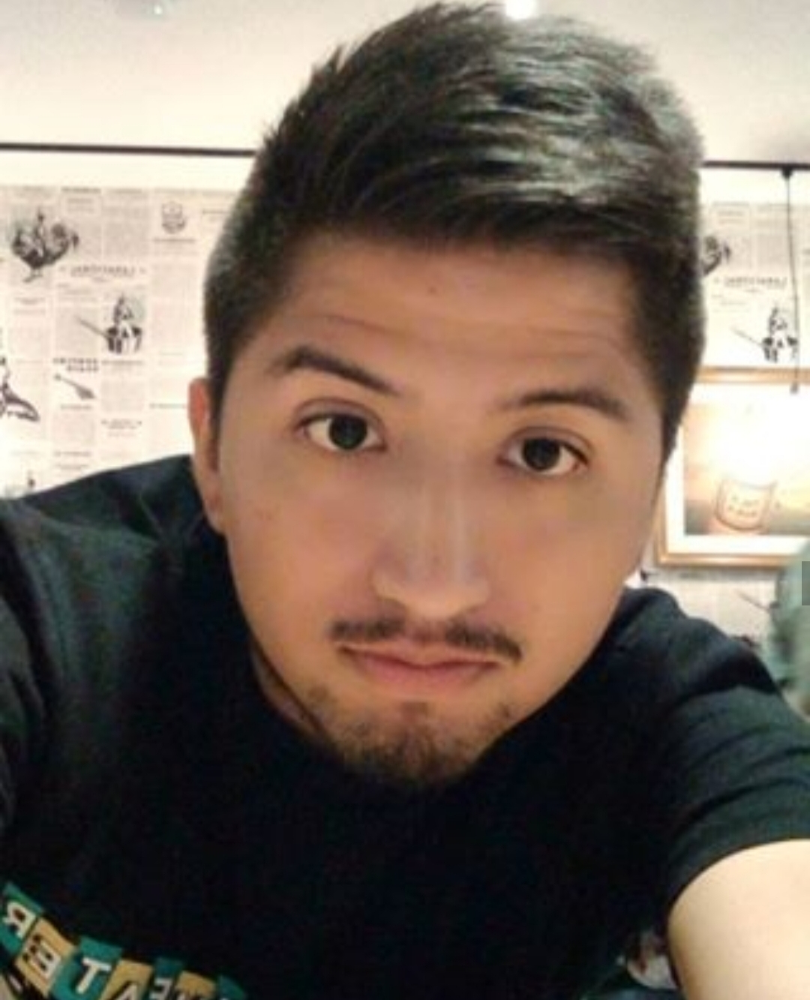

Sobre mi
Mi nombre es Kevin Usnayo Navarro, tengo 27 años y estoy cursando el 5to. ciclo de la carrera de Ciencias de la Comunicación en la Universidad Tecnológica del Perú (UTP). Vivo en Lima, en el distrito del Rímac. Mi gusto por la carrera se dió gracias a mi tío paterno, él trabaja en el canal Latina Televisión en el área de Coordinación Comercial y cuenta con una empresa que realiza videos institucionales a empresas. Me gusta lo que realiza y lo que me cuenta. Mi primera meta es terminar la universidad y la segunda es poder trabajar en una empresa fuera de Lima gracias a mi carrera.
